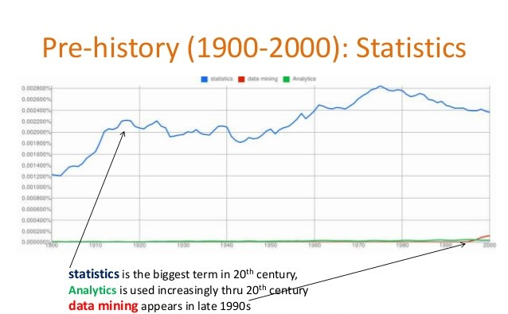
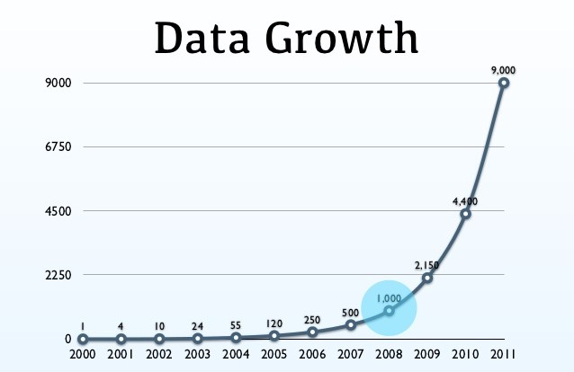

The History Of Big Data
Links:
-The history of big data on 20th Century:

The principal significant information venture is made in 1937 and was requested by the Franklin D. Roosevelt's organization in the USA. After the Social Security Act became law in 1937, the legislature needed to monitor commitment from 26 million Americans and in excess of 3 million managers. IBM got the agreement to create punch card-perusing machine for this monstrous accounting venture.
The main information handling machine showed up in 1943 and was created by the British to decode Nazi codes during World War II. This gadget, named Colossus, scanned for designs in caught messages at a pace of 5.000 characters every second. Along these lines decreasing the undertaking from weeks to only hours.
In 1952 the National Security Agency (NSA) is made and inside 10 years contract more than 12.000 cryptologists. They are stood up to with data over-burden during the Cold War as they begin gathering and handling insight flags consequently.
In 1965 the United Stated Government chose to assemble the principal server farm to store more than 742 million expense forms and 175 million arrangements of fingerprints by moving al those records onto attractive PC tape that must be put away in a solitary area. The undertaking was later dropped out of dread for 'Older sibling', yet it is commonly acknowledged that it was the start of the electronic information stockpiling period.
In 1989 British PC researcher Tim Berners-Lee developed inevitably the World Wide Web. He needed to encourage the sharing of data by means of a 'hypertext' framework. Little would he be able to know right now the effect of his development.
As of the '90s the production of information is prodded as an ever increasing number of gadgets are associated with the web. In 1995 the primary super-PC is fabricated, which had the option to accomplish as much work in a second than a number cruncher worked by a solitary individual can do in 30 years.
-The history of big data on 21th Century:
In 2005 Roger Mougalas from O’Reilly Media coined the term Big Data for the first time, only a year after they created the term Web 2.0. It refers to a large set of data that is almost impossible to manage and process using traditional business intelligence tools.
<2005 is also the year that Hadoop was created by Yahoo! built on top of Google’s MapReduce. It’s goal was to index the entire World Wide Web and nowadays the open-source Hadoop is used by a lot organizations to crunch through huge amounts of data.
As more and more social networks start appearing and the Web 2.0 takes flight, more and more data is created on a daily basis. Innovative startups slowly start to dig into this massive amount of data and also governments start working on Big Data projects. In 2009 the Indian government decides to take an iris scan, fingerprint and photograph of all of tis 1.2 billion inhabitants. All this data is stored in the largest biometric database in the world.
In 2010 Eric Schmidt speaks at the Techonomy conference in Lake Tahoe in California and he states that "there were 5 exabytes of information created by the entire world between the dawn of civilization and 2003. Now that same amount is created every two days."
In 2011 the McKinsey report on Big Data: The next frontier for innovation, competition, and productivity, states that in 2018 the USA alone will face a shortage of 140.000 – 190.000 data scientist as well as 1.5 million data managers.
In the past few years, there has been a massive increase in Big Data startups, all trying to deal with Big Data and helping organizations to understand Big Data and more and more companies are slowly adopting and moving towards Big Data. However, while it looks like Big Data is around for a long time already, in fact Big Data is as far as the internet was in 1993. The large Big Data revolution is still ahead of us so a lot will change in the coming years. Let the Big Data era begin.